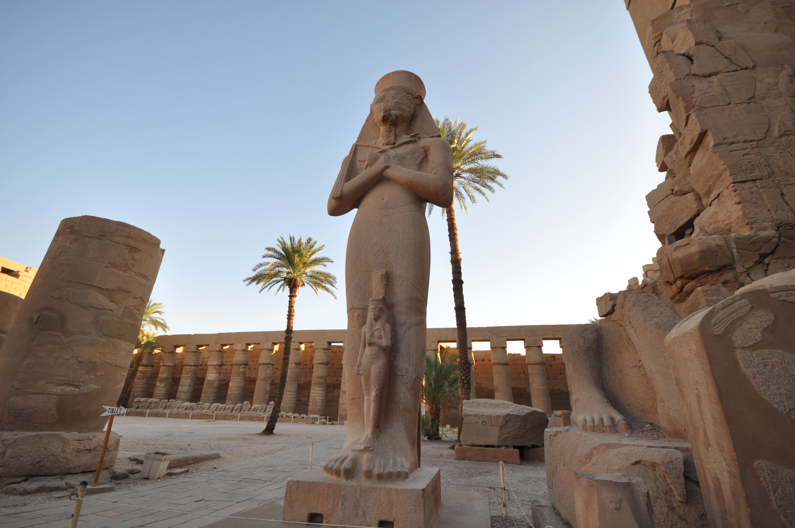
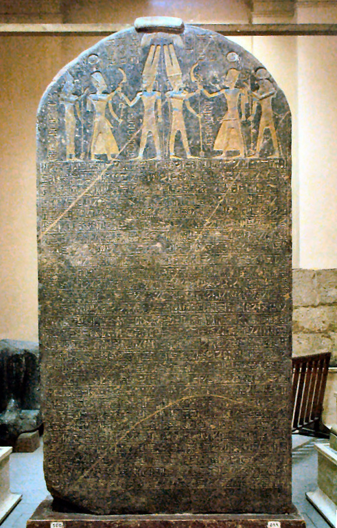

La salida de Egipto es el relato fundacional de Israel: esclavitud, plagas, un mar que se abre. Pero una migración masiva por el desierto debería haber dejado rastro. ¿Qué encuentra —y qué no— la arqueología?
Ningún relato es más central para la identidad de Israel que el Éxodo: la liberación de la esclavitud en Egipto, el paso del mar, la alianza en el Sinaí. Es el mito fundacional por excelencia, celebrado cada año en la Pascua judía. Precisamente por su importancia, merece el examen más cuidadoso —y el más respetuoso—.
Según el texto bíblico, salieron de Egipto "unos seiscientos mil hombres de a pie, sin contar los niños" —lo que implicaría una multitud de quizá dos millones de personas—, que vagaron cuarenta años por el desierto del Sinaí antes de entrar en Canaán. Una población de ese tamaño, moviéndose y acampando durante cuatro décadas, debería haber dejado abundantes huellas: restos de campamentos, cerámica, enterramientos, basura.
La arqueología del Sinaí, sin embargo, ha peinado la región y no ha encontrado rastro de semejante presencia en la época correspondiente. Tampoco hay, en los abundantes registros egipcios —meticulosos hasta para incidentes menores—, ninguna mención de una población israelita esclavizada, de las plagas, ni de una fuga masiva. El silencio, en ambos frentes, es prácticamente total.
La Biblia describe a unos dos millones de personas saliendo de Egipto y vagando cuarenta años por el desierto. Ni la arqueología del Sinaí ni los registros egipcios muestran rastro de algo de esa magnitud.
Aquí hay que ser rigurosos en ambos sentidos. "Ausencia de evidencia no es evidencia de ausencia", suele decirse, y es un principio válido: los defensores de la historicidad señalan que los egipcios omitían sistemáticamente sus derrotas y humillaciones, y que grupos nómadas dejan poca huella. Es un punto legítimo.
Pero tiene un límite. Una cosa es que no se registre un episodio menor, y otra muy distinta que dos millones de personas durante cuarenta años no dejen ni un solo rastro material ni documental. A esa escala, el silencio sí se vuelve significativo. Por eso el consenso mayoritario no es que "no pasó nada", sino que no ocurrió un éxodo masivo como el que describe el texto. Lo cual deja abierta una posibilidad más modesta.

Hay un objeto crucial para fechar todo esto: la estela de Merneptah, descubierta por Flinders Petrie en 1896. Es una gran losa de granito en la que el faraón Merneptah celebra sus victorias hacia el 1208 a.C., y contiene la primera mención de "Israel" fuera de la Biblia. El texto dice: "Israel está asolado, su semilla ya no existe".

Este dato es doblemente revelador. Por un lado, confirma que hacia el 1208 a.C. existía ya un pueblo llamado Israel. Pero —y esto es lo decisivo— el jeroglífico que acompaña al nombre lo marca como un pueblo ya asentado en Canaán, no como una multitud saliendo de Egipto o vagando por el desierto. Es decir: en la fecha en que muchos sitúan el Éxodo, Israel ya estaba en su tierra. La cronología del relato no encaja bien con la evidencia.
Descartar el éxodo masivo no obliga a descartar todo núcleo histórico. Varios especialistas proponen una hipótesis intermedia y verosímil: que un grupo pequeño —quizá semíticos que sí estuvieron en Egipto y salieron de allí— trajera consigo una experiencia de liberación que, con el tiempo, se convirtió en el relato fundacional de todo Israel. Detalles como los nombres egipcios de algunos personajes (Moisés mismo es un nombre egipcio) apuntan a algún contacto real con Egipto.
En esta lectura, el Éxodo no sería una crónica literal de dos millones de personas, sino la amplificación épica de una memoria más modesta, transformada en el mito nacional que dio sentido e identidad a un pueblo. No es "verdad" ni "mentira" en el sentido simple: es cómo las naciones antiguas convertían la memoria en identidad. Y esa función —dar a un pueblo un relato de libertad frente a la opresión— ha tenido una fuerza histórica innegable, mucho más allá de cuánta gente cruzara realmente el desierto.
Una gran multitud salió de Egipto y vagó por el Sinaí tal como narra el texto; la falta de rastro se debe a lo efímero de un campamento nómada y al silencio interesado de Egipto.
No hubo un éxodo masivo (sin rastro en el Sinaí ni en Egipto; Israel ya estaba en Canaán en 1208). Es posible un núcleo pequeño real, amplificado luego en el mito fundacional.
Lectura: hay amplio acuerdo en que no hubo un éxodo masivo de dos millones como el descrito (ausencia total de rastro; la estela de Merneptah sitúa a Israel ya en Canaán). La posibilidad de un núcleo histórico menor se debate con seriedad: es una hipótesis viva, no un cierre.
La ausencia de evidencia arqueológica de un éxodo masivo y de presencia en el Sinaí es expuesta por Israel Finkelstein y Neil A. Silberman en The Bible Unearthed (2001). La estela de Merneptah (ca. 1208 a.C.), hallada por Petrie en 1896, es la primera mención extrabíblica de Israel, con el determinativo de "pueblo" asentado en Canaán.
La hipótesis de un núcleo histórico menor cuenta con defensores serios (por ejemplo, los trabajos reunidos por Levy, Schneider y Propp, Israel’s Exodus in Transdisciplinary Perspective, 2015; y James Hoffmeier). El nombre egipcio de Moisés y otros detalles se citan como posibles trazas de contacto real con Egipto.
Se distingue el éxodo masivo y literal (sin apoyo en la evidencia) de un posible núcleo histórico (debatido) y de la función identitaria del relato (indiscutible e independiente de su historicidad). Se respeta la celebración religiosa del Éxodo, cuyo valor no depende de la arqueología.